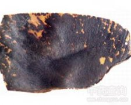

玳瑁

拼音
Dài Mào
别名
文甲、瑇玳
来源
龟科动物玳瑁Eretmochelys imbricata L.背部的甲片。全年均可捕捉。将玳瑁倒悬，用沸醋泼之，其甲片即能逐片剥下，去掉残肉，洗净即得。
生境分布
栖于温、热带海洋中。以鱼类、虾蟹、软体动物和海藻等为食。分布福建、台湾、海南、西沙群岛等地。主产台湾、福建及广东海南岛、西沙群岛等地。
药材特点
体长可达1.6米。背及腹部均有坚硬的鳞甲。头部具前颧鳞甲2对。鼻孔近于吻端。上须钩曲，嘴形似鹦鹉，颌缘锯齿状。背面鳞甲，早期呈覆瓦状排列，随年龄增长而变成平置排列，表面光泽，有褐色与浅黄色相间而成的花纹。中央为脊鳞甲5枚，两侧有肋鳞甲4对；缘鳞甲25枚，边缘呈锯齿状。腹面由13枚鳞甲组成，呈黄黑色。四肢均呈扁平叶状。前肢较大，具2爪，后肢只有1爪。尾短小，通常不露出甲外。
性状
本品为近圆形、三角形或多角形的板片，长10～20厘米，厚1.5～3毫米。边缘较薄，中央稍厚。表面呈暗褐色的半透明体。并有暗褐色与乳黄色的花纹，平滑而有光泽；内面密布白色的条纹或斑点，并有纵横交错的沟纹。质坚韧，不易折断，断面角质。气无。以片厚、花纹明显、半透明者为佳。
性味
甘，寒。
功能主治
清热解毒，镇心平肝。用于热病发狂，谵语，小儿惊风，痈肿疮毒。
用法用量
1～3钱。多入丸、散剂用。
化学成分
含角蛋白及胶质等。
药理作用
1：对免疫功能的影响：玳瑁的乙醇提取液，在体外对鼻咽癌患者T调节细胞亚群的T4和T8阳性细胞，仅有微弱诱导作用
摘录
《全国中草药汇编》